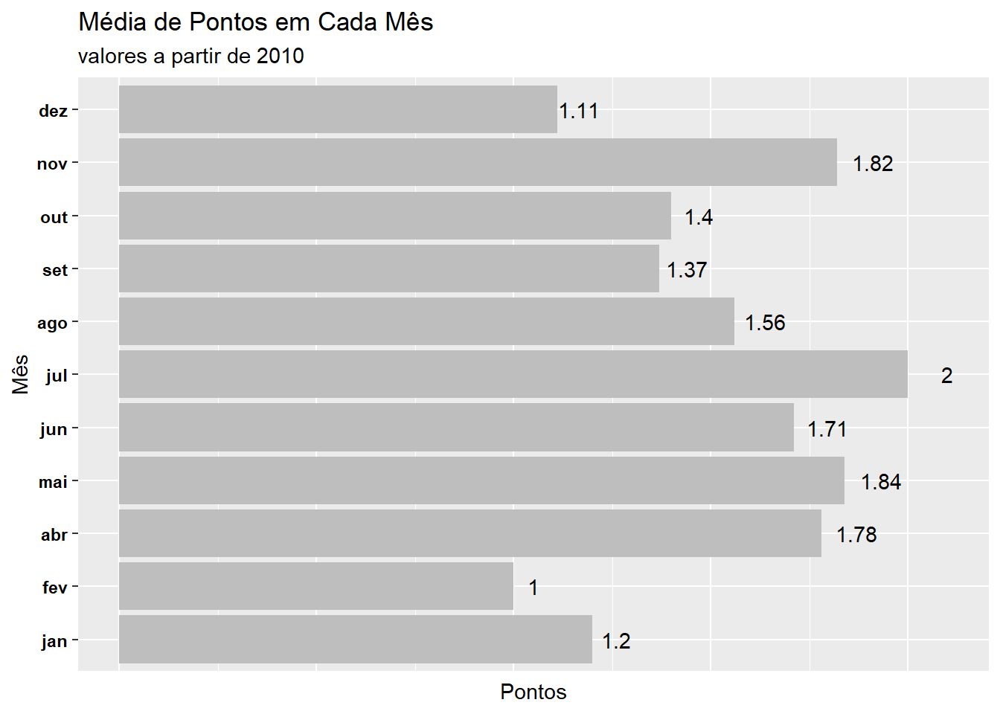

library(dplyr) #tratamento de dados
library(tidyr) #tratamento de dados
library(magrittr) #o pipe antigo
library(purrr) #programação funcional
library(lubridate) #tratar datas
library(knitr) #formatação de tabelas
library(brasileirao) #base de dados utilizados
library(ggplot2) #gráficos
library(treemap) #gráficos
library(jpeg) #adicionar imagens
library(patchwork) #adicionar imagensAtualizado em 11/09/2022
Objetivo
Explorar a biblioteca brasileirão (Amorim 2022) . É uma boa base para praticar, principalmente, manipulações de dataframe.
Ela consegue, além de outras coisas, retornar jogos, a data, o placar e os clubes envolvidos desde 2003 no campeonato brasileiro de futebol.
Bibliotecas
Mão na Massa
Carregando dados.
Br <- brasileirao::matchesPodemos expor os resultados na forma de tabela.
| season | date | home | score | away |
|---|---|---|---|---|
| 2003 | 2003-03-29 | Athletico PR | 2x0 | Grêmio |
| 2003 | 2003-03-29 | Guarani | 4x2 | Vasco |
| 2003 | 2003-03-30 | Corinthians | 0x3 | Atlético MG |
| 2003 | 2003-03-30 | Goiás | 2x2 | Paysandu |
| 2003 | 2003-03-30 | Criciúma | 2x0 | Fluminense |
| 2003 | 2003-03-30 | Cruzeiro | 2x2 | São Caetano |
Verificando os tipos de variáveis das colunas.
glimpse(Br)Rows: 8,026
Columns: 5
$ season <dbl> 2003, 2003, 2003, 2003, 2003, 2003, 2003, 2003, 2003, 2003, 200~
$ date <date> 2003-03-29, 2003-03-29, 2003-03-30, 2003-03-30, 2003-03-30, 20~
$ home <chr> "Athletico PR", "Guarani", "Corinthians", "Goiás", "Criciúma", ~
$ score <chr> "2x0", "4x2", "0x3", "2x2", "2x0", "2x2", "1x1", "0x0", "1x1", ~
$ away <chr> "Grêmio", "Vasco", "Atlético MG", "Paysandu", "Fluminense", "Sã~Realizando algumas manipulações para obter resultados dos jogos a partir de 2010.
Tabela_extendida <- Br %>% filter(season >=2010) %>%
separate(score,
c("Placar_Mandante","Placar_Visitante"),
sep = "x",
convert = TRUE,
remove = FALSE
) %>%
mutate(
Mandante = case_when(
Placar_Mandante > Placar_Visitante~"Venceu",
Placar_Mandante < Placar_Visitante~"Perdeu",
Placar_Mandante == Placar_Visitante~"Empate"
),
Visitante = case_when(
Placar_Mandante < Placar_Visitante~"Venceu",
Placar_Mandante > Placar_Visitante~"Perdeu",
Placar_Mandante == Placar_Visitante~"Empate"
)
)A ideia aqui é selecionar um clube e fazer as análises a partir dessa escolha. Vamos criar uma função para selecionar um time.
Clube<-function(dataframe,Time){
#selecionar o clube quando ele é mandante
TimeMandante <-dataframe %>% filter(home==Time) %>%
select(season,date,home,Placar_Mandante,
Placar_Visitante,Mandante,away) %>%
rename(
"clube"="home",
"Gols_Pro"="Placar_Mandante",
"Gols_Contra"="Placar_Visitante",
"Resultado"="Mandante",
"adversario" ="away") %>%
mutate(mando = "Mandante")
#selecionar o clube quando ele é visitante
TimeVisitante <- dataframe %>%
filter(away==Time) %>%
select(season,date,away,Placar_Visitante,
Placar_Mandante,Visitante,home) %>%
rename(
"clube"="away",
"Gols_Pro"="Placar_Visitante",
"Gols_Contra"="Placar_Mandante",
"Resultado"="Visitante",
"adversario"="home") %>%
mutate(mando = "Visitante")
#Unindo as tabelas
Resultados <-rbind(TimeMandante,TimeVisitante)
return(Resultados)
}Selecionando um time.
O interessante é selecionar um clube que jogou muitas edições para ter uma boa quantidade de dados. Convenientemente foi selecionado o Corinthians.

Timao<-Clube(dataframe= Tabela_extendida,Time ="Corinthians")É interessante adicionar os pontos obtidos em cada partida.
Usando o pacote lubridate é possível tratar datas, obtendo informações sobre o dia,dia da semana, mês e ano de forma isolada.
#Timao$dia_Mes <- lubridate::day(Timao$date)
Timao$Mes <- lubridate::month(Timao$date, label = TRUE)
#Timao$NdiaSemana <- lubridate::wday(Timao$date)Qual o número de vitórias, empates e derrotas da última década?
Timao %>% filter(!is.na(Pontos)) %>% count(Resultado) %>%
treemap(index = c("n","Resultado"),
vSize = "n",
align.labels=list(c("center", "center"),c("center", "top")),
title = "Resultados do Corinthians desde 2010",
fontsize.labels=c(15,12),
palette = c("#cfc6c6","#3d3a3a","#0a0a0a")
)
Com a função group_by e summarise podemos agrupar os dados.
DadosAgg <- Timao %>%
filter(!is.na(Pontos)) %>%
group_by(Mes)%>%
summarise(
MediaPontos = round(mean(Pontos),2),
GolsPro = sum(Gols_Pro),
GolsContra =sum(Gols_Contra)) %>%
arrange(desc(Mes))
DadosAgg %>% knitr::kable(col.names =
c("Mês","Pontos","Gols Pro","Gols Contra"))| Mês | Pontos | Gols Pro | Gols Contra |
|---|---|---|---|
| dez | 1.11 | 16 | 19 |
| nov | 1.82 | 85 | 58 |
| out | 1.40 | 87 | 80 |
| set | 1.37 | 89 | 77 |
| ago | 1.56 | 88 | 69 |
| jul | 2.00 | 81 | 35 |
| jun | 1.71 | 62 | 38 |
| mai | 1.84 | 53 | 32 |
| abr | 1.78 | 16 | 9 |
| fev | 1.00 | 6 | 7 |
| jan | 1.20 | 9 | 8 |
Qual mês, em média, fez mais pontos?
DadosAgg%>%
ggplot(aes(x =MediaPontos ,y =Mes, label = MediaPontos)) +
geom_col(fill = "gray")+
geom_text(
position = position_stack(vjust =1.05),
color="#030202") +
labs(x = "Pontos",y = "Mês", title = "Média de Pontos em Cada Mês",
subtitle = "valores a partir de 2010") +
theme(axis.text.x = element_blank(),axis.ticks.x=element_blank(),
axis.text.y =element_text(face ="bold",
colour = "#030202"))
Em quais mêses, fez e tomou ,mais gols?
DadosAgg %>% ggplot() +
geom_col(aes(x = -GolsPro ,y =Mes), fill="#424d6b") +
geom_text(aes(x = -GolsPro ,y =Mes,label =GolsPro),
position = position_stack(vjust =0.5),
color ="#ced2de") +
geom_col(aes(x = GolsContra,y =Mes),
fill="#806630") +
geom_text(aes(x =GolsContra ,y =Mes,label =GolsContra),
position = position_stack(vjust =0.5),
color="#030202") +
annotate("text",x = -50 ,y =2,label ="Gols Pro",
color ="#424d6b") +
annotate("text",x = 50 ,y =2,label ="Gols Contra",
color ="#806630") +
labs(x = "Gols",y = "Mês", title = "Total de Gols por Mês",
subtitle = "valores a partir de 2010") +
theme(axis.text.x = element_blank(),
axis.ticks.x=element_blank(),
axis.text.y =element_text(face ="bold",
colour = "#030202"))Qual o desempenho das últimas temporadas?
Texto <- paste(
strwrap("A temporada de 2022 ainda não foi concluída",
20),
collapse = "\n")
path <-"escudo1.jpg"
img <- readJPEG(path,native = TRUE)
pontuacao %>%
ggplot() +
geom_line(aes(x = season, y = Pontos),size =1.4,colour ="grey") +
scale_x_continuous(breaks = c(2010:2022)) +
geom_point(aes(x = season, y = Pontos),size = 2,color="grey") +
geom_point(
aes(x = season,y=Pontos, color =Titulo, size= Titulo)) +
scale_colour_manual(values = c("#0a0a0a","#b3a6a6")) +
scale_size_manual(values = c(3,2)) +
geom_line(aes(x = c(2010:2022),y = mean(`Pontos`)),
linetype =2) +
labs(x ="Temporada",title = "Desempenho do Clube") +
theme(axis.text.x = element_text(angle = 90)) +
annotate("text",x = 2011 ,y =60,size = 2,
label = "Média", fontface = "bold",colour = "black") +
annotate("text",x = 2018 ,y =35,size = 4,
label = Texto, fontface = "bold",colour = "red") +
inset_element(p = img,
left = 1.00,
bottom = 0.65,
right = 1.35,
top = 1.15)Conclusão
A biblioteca brasileirao é excelente . Foi possível extrair bastante informação. Ela fornece de forma simples os dados gerais sobre as partidas, infelizmente ela não trás informações como número de cartões, tempo de jogo sem interrupções, posse bola, e entre outras. Não é terra arrasada, pois outros dados de fontes distintas podem ser adicionados para complementar as análises.
Ver também
References
Amorim, William. 2022. “Brasileirao: Brazilian National Soccer League (Brasileirão) Matches.” https://github.com/williamorim/brasileirao.